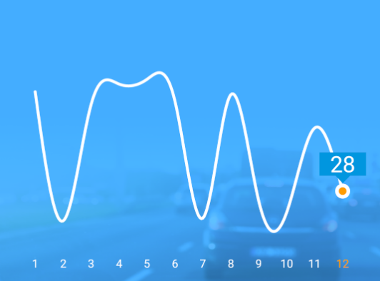

月份得分平滑曲线
需求：实现十二月份的得分平滑曲线，如下所示：

当看到图表时，首先想到的是第三方的开源控件如：MPAndroidChart、HelloChart,但是测试后，发现了一些无法满足需求的事
- 坐标只显示当前月份，都是全部显示
- 月份不可点击切换
- 利用控件本身指定的平滑曲线与实际坐标点出入较大
既然第三方控件不能满足，那么就自定义个折线 View 实现，主要考虑的有：
- 画 X 轴月份坐标
- 画得分的坐标和当前得分浮窗
- 画平滑曲线
- 给定点击事件，切换当前得分浮窗
步骤
onSizeChanged（）确定画布大小后，根据传入的得分列表，计算对应的坐标。
12345678910111213141516171819202122232425262728293031323334353637383940414243444546@Overrideprotected void onSizeChanged(int w, int h, int oldw, int oldh){super.onSizeChanged(w, h, oldw, oldh);viewWith = w;//宽viewHeight = h;//高initData();}private void initData(){scorePoints = new ArrayList<>();//坐标 Listpoints_x = new LinkedList<Integer>(); //用于计算曲线points_y = new LinkedList<Integer>();float maxScoreYCoordinate = viewHeight * 0.15f;//设置最大高度float minScoreYCoordinate = viewHeight * 0.80f;//设置最大宽度float newWith = viewWith - (viewWith * 0.1f) * 2;//分隔线距离最左边和最右边的距离是0.1倍的viewWithint coordinateX;if (score == null) {return;}selectMonth = score.length;//默认选中最后一个月for(int i = 0; i < score.length; i++){Log.d("ScoreChartView", "initData: " + score[i]);Point point = new Point();//计算x轴坐标coordinateX = (int) (newWith * ((float) (i) / (monthCount - 1)) + (viewWith * 0.1f));point.x = coordinateX;if(score[i] > maxScore){score[i] = maxScore;}else if(score[i] < minScore){score[i] = minScore;}//计算y轴坐标point.y = (int) (((float) (maxScore - score[i]) / (maxScore - minScore)) * (minScoreYCoordinate - maxScoreYCoordinate) + maxScoreYCoordinate);scorePoints.add(point);}}根据坐标画出 X 轴月份
12345678910111213141516171819202122232425262728293031//绘制文本private void drawText(Canvas canvas){textPaint.setTextSize(dipToPx(12));textPaint.setColor(textNormalColor);textPaint.setColor(0xff7c7c7c);float newWith = viewWith - (viewWith * 0.1f) * 2;//分隔线距离最左边和最右边的距离是0.15倍的viewWithfloat coordinateX;//分隔线X坐标textPaint.setTextSize(dipToPx(12));textPaint.setStyle(Paint.Style.FILL);textPaint.setColor(textNormalColor);textSize = (int) textPaint.getTextSize();for(int i = 0; i < monthText.length; i++){coordinateX = newWith * ((float) (i) / (monthCount - 1)) + (viewWith * 0.1f);if(i == selectMonth - 1){//选中月份textPaint.setStyle(Paint.Style.STROKE);textPaint.setColor(circleColor);}//绘制月份canvas.drawText(monthText[i], coordinateX, viewHeight * 0.85f + dipToPx(4) + textSize + dipToPx(5), textPaint);textPaint.setColor(textNormalColor);}}
画得分的坐标和当前得分浮窗
123456789101112131415161718192021222324252627282930313233343536373839404142434445464748495051525354555657585960616263646566676869707172737475767778protected void drawPoint(Canvas canvas){if(scorePoints == null){return;}brokenPaint.setStrokeWidth(dipToPx(1));for(int i = 0; i < scorePoints.size(); i++){//选中月份绘制圆点if(i == selectMonth - 1){brokenPaint.setStyle(Paint.Style.FILL);brokenPaint.setColor(0xffffffff);canvas.drawCircle(scorePoints.get(i).x, scorePoints.get(i).y, dipToPx(8f), brokenPaint);//绘制浮动文本背景框drawFloatTextBackground(canvas, scorePoints.get(i).x, scorePoints.get(i).y - dipToPx(8.5f));textPaint.setColor(textNormalColor);textPaint.setTextSize(dipToPx(24f));//绘制浮动文字canvas.drawText(String.valueOf(score[i]), scorePoints.get(i).x, scorePoints.get(i).y - dipToPx(8f) - textSize, textPaint);//内层brokenPaint.setColor(circleColor);canvas.drawCircle(scorePoints.get(i).x, scorePoints.get(i).y, dipToPx(2.5f), brokenPaint);brokenPaint.setStyle(Paint.Style.FILL);brokenPaint.setColor(circleColor);canvas.drawCircle(scorePoints.get(i).x, scorePoints.get(i).y, dipToPx(4f), brokenPaint);}}}...private void drawFloatTextBackground(Canvas canvas, int x, int y){brokenPath.reset();brokenPaint.setColor(floatTextBackgroundColor);brokenPaint.setStyle(Paint.Style.FILL);//P1Point point = new Point(x, y);brokenPath.moveTo(point.x, point.y);//P2point.x = point.x + dipToPx(8);point.y = point.y - dipToPx(8);brokenPath.lineTo(point.x, point.y);//P3point.x = point.x + dipToPx(17);//右下角brokenPath.lineTo(point.x, point.y);//P4point.y = point.y - dipToPx(25);//右上角brokenPath.lineTo(point.x, point.y);//P5point.x = point.x - dipToPx(50);brokenPath.lineTo(point.x, point.y);//P6point.y = point.y + dipToPx(25);//左下角brokenPath.lineTo(point.x, point.y);//P7point.x = point.x + dipToPx(17);brokenPath.lineTo(point.x, point.y);//最后一个点连接到第一个点brokenPath.lineTo(x, y);canvas.drawPath(brokenPath, brokenPaint);}
画平滑曲线，根据坐标列表，分别将坐标点的 x 和 y 存入各自的 list 中，由 Cubic 根据矩阵计算曲线，并在两两坐标点中根据指定的点数画曲线。
1234567891011121314151617181920212223242526272829303132333435363738394041424344454647484950515253545556575859606162636465666768697071727374757677787980818283848586878889909192939495969798private void drawBrokenLine(Canvas canvas){brokenPath.reset();brokenPaint.setColor(brokenLineColor);brokenPaint.setStrokeWidth(brokenLineWith);brokenPaint.setStyle(Paint.Style.STROKE);if(score == null || score.length == 0 || score.length == 1){return;}points_x.clear();points_y.clear();for (int i = 0; i < scorePoints.size(); i++) {points_x.add(scorePoints.get(i).x);//存入所有 X 坐标points_y.add(scorePoints.get(i).y);//存入所有 Y 坐标}List<Cubic> calculate_x = calculate(points_x);//计算List<Cubic> calculate_y = calculate(points_y);brokenPath.moveTo(calculate_x.get(0).eval(0), calculate_y.get(0).eval(0));for (int i = 0; i < calculate_x.size(); i++) {for (int j = 1; j <= STEPS; j++) {//两点之间指定的数量float u = j / (float) STEPS;brokenPath.lineTo(calculate_x.get(i).eval(u), calculate_y.get(i).eval(u));}}canvas.drawPath(brokenPath, brokenPaint);}...private List<Cubic> calculate(List<Integer> x) {int n = x.size() - 1;float[] gamma = new float[n + 1];float[] delta = new float[n + 1];float[] D = new float[n + 1];int i;/** We solve the equation [2 1 ] [D[0]] [3(x[1] - x[0]) ] |1 4 1 | |D[1]|* |3(x[2] - x[0]) | | 1 4 1 | | . | = | . | | ..... | | . | | . | | 1 4* 1| | . | |3(x[n] - x[n-2])| [ 1 2] [D[n]] [3(x[n] - x[n-1])]** by using row operations to convert the matrix to upper triangular and* then back sustitution. The D[i] are the derivatives at the knots.*/gamma[0] = 1.0f / 2.0f;for (i = 1; i < n; i++) {gamma[i] = 1 / (4 - gamma[i - 1]);}gamma[n] = 1 / (2 - gamma[n - 1]);delta[0] = 3 * (x.get(1) - x.get(0)) * gamma[0];for (i = 1; i < n; i++) {delta[i] = (3 * (x.get(i + 1) - x.get(i - 1)) - delta[i - 1])* gamma[i];}delta[n] = (3 * (x.get(n) - x.get(n - 1)) - delta[n - 1]) * gamma[n];D[n] = delta[n];for (i = n - 1; i >= 0; i--) {D[i] = delta[i] - gamma[i] * D[i + 1];}/* now compute the coefficients of the cubics */List<Cubic> cubics = new LinkedList<Cubic>();for (i = 0; i < n; i++) {Cubic c = new Cubic(x.get(i), D[i], 3 * (x.get(i + 1) - x.get(i))- 2 * D[i] - D[i + 1], 2 * (x.get(i) - x.get(i + 1)) + D[i]+ D[i + 1]);cubics.add(c);}return cubics;}...public class Cubic {float a,b,c,d; /* a + b*u + c*u^2 +d*u^3 */public Cubic(float a, float b, float c, float d){this.a = a;this.b = b;this.c = c;this.d = d;}/** evaluate cubic */public float eval(float u) {return (((d*u) + c)*u + b)*u + a;}}
点击事件，根据 onTouchEvent() 确定点击的位置,如果是有效的触摸范围，然后进行重绘
123456789101112131415161718192021222324252627282930313233343536373839404142434445//是否是有效的触摸范围private boolean validateTouch(float x, float y){//曲线触摸区域for(int i = 0; i < scorePoints.size(); i++){// dipToPx(8)乘以2为了适当增大触摸面积if(x > (scorePoints.get(i).x - dipToPx(8) * 2) && x < (scorePoints.get(i).x + dipToPx(8) * 2)){if(y > (scorePoints.get(i).y - dipToPx(8) * 2) && y < (scorePoints.get(i).y + dipToPx(8) * 2)){selectMonth = i + 1;return true;}}}//月份触摸区域//计算每个月份X坐标的中心点float monthTouchY = viewHeight * 0.85f - dipToPx(3);//减去dipToPx(3)增大触摸面积float newWith = viewWith - (viewWith * 0.1f) * 2;//分隔线距离最左边和最右边的距离是0.15倍的viewWithfloat validTouchX[] = new float[monthText.length];for(int i = 0; i < scorePoints.size(); i++)//超出不可点击{validTouchX[i] = newWith * ((float) (i) / (monthCount - 1)) + (viewWith * 0.1f);}if(y > monthTouchY){for(int i = 0; i < validTouchX.length; i++){Log.d("ScoreChartView", "validateTouch: validTouchX:" + validTouchX[i]);if(x < validTouchX[i] + dipToPx(8) && x > validTouchX[i] - dipToPx(8)){Log.d("ScoreChartView", "validateTouch: " + (i + 1));selectMonth = i + 1;return true;}}}return false;}
结论
自此就完成了需求，需要注意的是，关闭硬件加速，可全局指定或具体的 activity 中指定，不关闭硬件加速可能会出现绘制折线错乱等问题。由于平滑曲线计算，产生的趋势问题，曲线的谷底和谷峰可能出现超过坐标点最低后最高。
https://github.com/DituLin/ScoreChartDemo